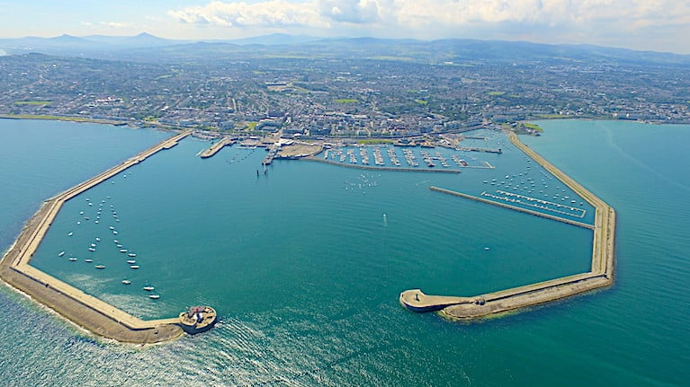

See veebileht tutvustab Irimaal Dublinis asuvat Dun Laoghaire'i muuli. Lisaks leiab veebileleht veel lingi Dun Laoghaire'i sadama ajaloole ja pildi vana hiina vanasõnast, mis paikneb muuli autahvlil, austusavaldusena Jay Naidoole.
Dun Laoghaire'i sadama ja muuli kohta saad lugeda täpsemalt siit: Dun Laoghaire sadam.
Muulid ehitati:
| Carlisle muul: | 1855 | |
| St. Michael'i muul: | 1969 | 9. märts |